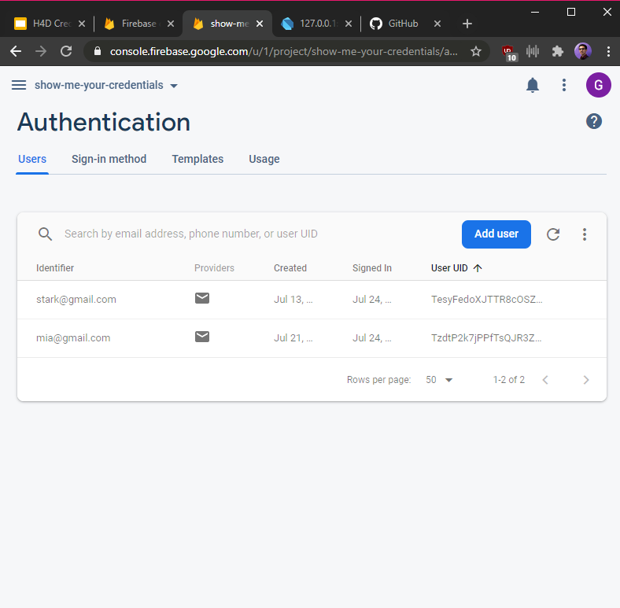
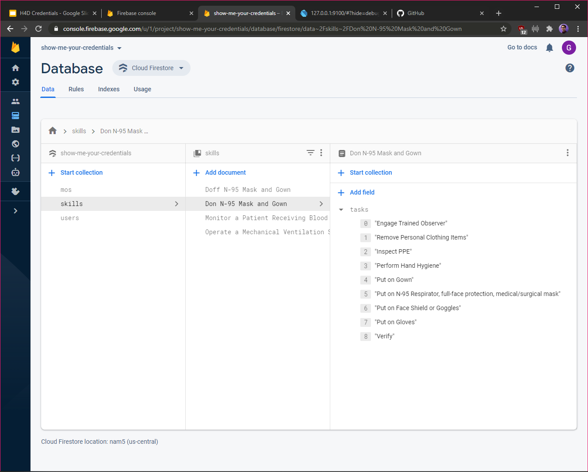

Skill Tracking
The app is designed to allow medical personnell in training
to track their learned and verified skills. As a trainee is
working towards certificaiton for a MOS, they are able to
easily see which skills they have not yet learned. They are
able to further see what component tasks make up each skill,
in order to complete certifcation requirements in a timely
manner.
Each skill learned is verified by a
supervisor, who has the ability to accept or decline
verification requests for the personnell they manage. Once
the component skills for a MOS have been learned, the
trainee is automatically marked by the system for
certification.

Skill Checklist
Skills do not have to be completed in order, and they also
can be marked as in progress when the component tasks have
only been partialy completed.
Tasks for each
skill are specified according to the US Army DTMS database,
and according to the MOS specification documentations. These
outlines can be updated from the databse, or updated
manually by a supervisor authorized user.

Built With Flutter
By using the Flutter mobile framework, the app is
cross-platform compatible for both iOS and Android devices
via the Dart programming language. The material design
language inspired by Google keeps the UI clean, clutter
free, and consistent.
This app prototype was
created for the US Army Hospital at Ft. Bragg and is
currently being developed into a full application to be used
with the DTMS successor.

Firebase Integration
User login and information is handled via Firebase provided
by Google Users register through their email and are
required to perform two-factor authentication for added
security. User data is securely managed, and is not hosted
by the app itself but instead on cloud servers.
Firebase
enables for usage based scaling and rapid prototyping. While
the Army will not use Firebase for the production version of
this app, Firebase was vital in creating an MVP prototype
for demonstrative purposes.

Cloud Firestore
MOS, Skills, and Tasks are managed via Cloud Firestore and
utilize bespoke data structures that emulate those found in
the Army DTMS database. As a result, reading data is
familiar to both technical and non-technical supervisors.
Supervisors
can manage the catalog from within the app, and do not need
to access the Firebase Console; however, technical
supervisors can be granted access to parts of, or the entire
Firestore backend.
